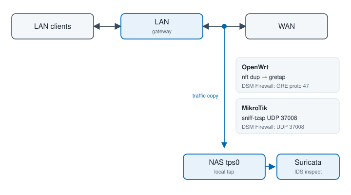

The NAS is not the gateway. Suricata on the LAN NIC only sees packets to or from this NAS. To inspect LAN ↔ WAN client traffic, the LAN gateway sends a copy toward the NAS. Suricata listens on local tps0. This is IDS only (no packet drop).
OpenWrt uses a GRE tap. MikroTik RouterOS cannot peer with that tap (EoIP is a different GRE flavor), so it streams TZSP instead. Pick the matching option under Capture source.

/var/packages/ThreatPrevention/target/etc/openwrt/ and …/etc/mikrotik/.setcap applied, and the package started. See This NAS (Suricata IDS).192.168.1.1, NAS 192.168.1.130. Substitute yours..rsc).tps0 is created.192.168.1.1) to this NAS.Without this rule, tps0 stays quiet even if the tunnel interface exists.
/var/packages/ThreatPrevention/target/etc/openwrt/ to the router (or copy apply-tps-mirror.sh alone).opkg update && opkg install kmod-gre gre.NAS_IP=192.168.1.130 sh apply-tps-mirror.sh
pppoe-wan (or the equivalent L3 name), not the underlying ethernet. If detection is wrong, rerun with WAN_IF=pppoe-wan NAS_IP=192.168.1.130 sh apply-tps-mirror.sh.tps-mirror.network (set ipaddr to the router LAN IP and peeraddr to the NAS). Reload network.tps-mirror.nft.template to /etc/nftables.d/10-tps-mirror.nft.__WAN_IF__, __NAS_IP__, and __GRE_DEV__ (often gre-tpsmirror)./etc/init.d/firewall reload.The nft hook is forward only, so the GRE copy (OUTPUT) is not re-mirrored. The include also returns ip protocol gre.
/var/packages/ThreatPrevention/target/etc/mikrotik/ to the router.fasttrack-connection. Fasttracked flows never hit mangle, so the NAS stays silent.NasIp, WanIf, and LanIf in apply-tps-mirror.rsc (PPPoE WAN is often pppoe-out1; LAN is often bridge)./import file-name=apply-tps-mirror.rsc./ip firewall mangle print stats where comment~"tps-mirror".Do not use EoIP or /interface gre toward this NAS. Those will not appear on tps0.
synopkg restart ThreatPrevention after setcap. The tap is created at package start, not when you click Apply.Apply writes /var/packages/ThreatPrevention/etc/mirror.conf (enabled=1, encap=gretap or tzsp, ifname=tps0). Creating tps0 needs CAP_NET_ADMIN (the same setcap as capture, or a restart as root via synopkg).
ip link show tps0 — the tap exists and is UP.cat /var/packages/ThreatPrevention/etc/interface — one line, tps0.tps0).var/log/tzsp.log is growing.ovs_eth0 (or the LAN pin). tps0 is removed on stop./etc/nftables.d/10-tps-mirror.nft, delete the network.tpsmirror UCI section, then reload network and firewall./ip firewall mangle remove [find comment~"tps-mirror"]. Re-enable fasttrack if you disabled it.